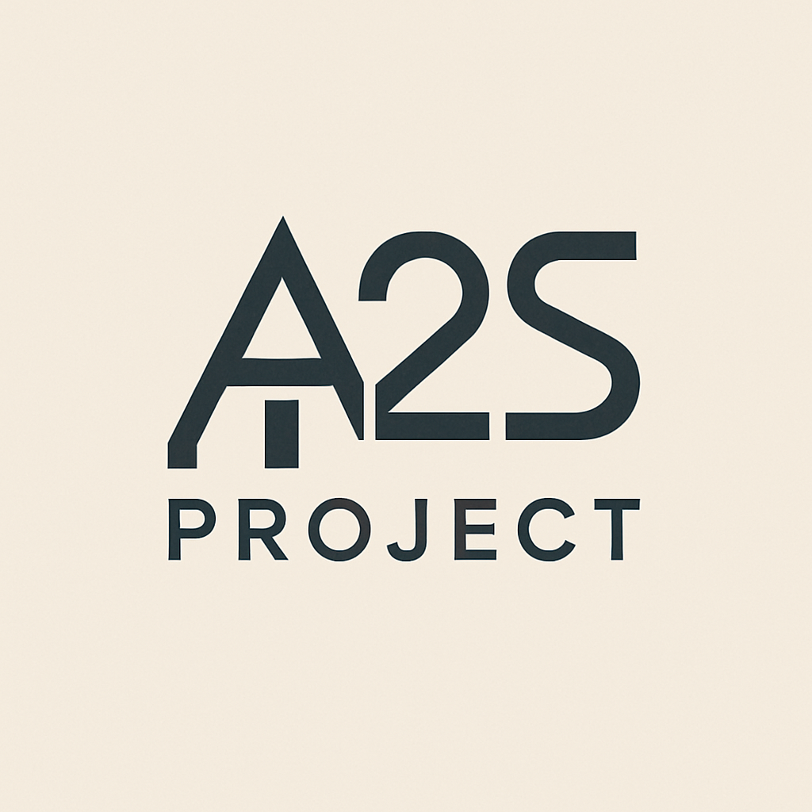

Devis, factures & dossiers d'urbanisme — en PDF, en quelques clics
Générer un devis professionnel en PDF, avec prestations et bon pour accord.
Ouvrir →Créer une facture en PDF avec conditions de paiement et mentions légales.
Ouvrir →Cartouche A3 pour une déclaration préalable de travaux (DP).
Ouvrir →Cartouche A3 pour un dossier de demande de permis de construire (PC).
Ouvrir →Tableau des surfaces (APS) en A3, avec calcul automatique de la surface habitable.
Ouvrir →Convertir une pente en % vers un angle en °, et inversement, en direct.
Ouvrir →Ratio, taux d'évolution, application d'une variation, valeur initiale.
Ouvrir →